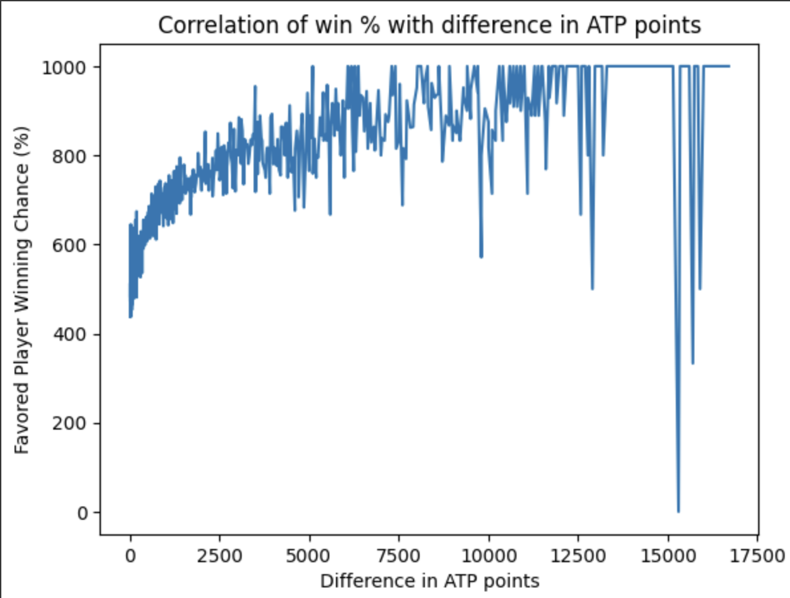
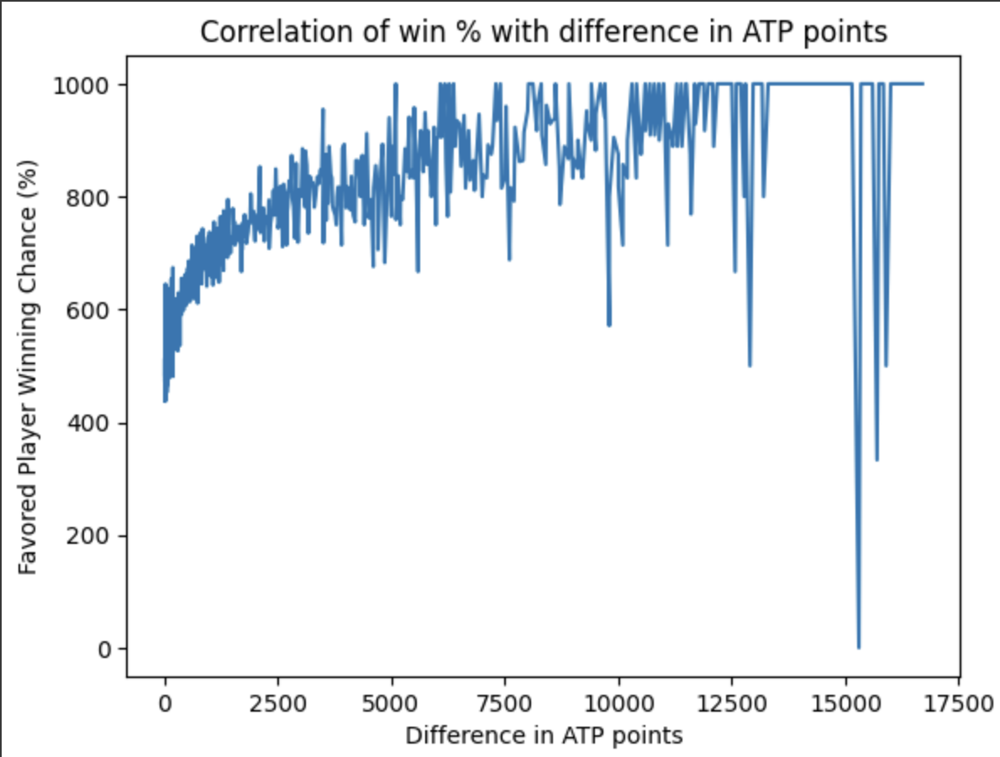

Elo is a dynamic player rating system originally developed for chess. On this site, I've adapted Elo for tennis. Tennis Elo provides a more accurate and responsive measure of player strength than traditional ranking systems based on tournament performance like the ATP and WTA because Elo updates after every match, focusing on outcomes of matches instead of circumstance.
Elo_new = Elo_old + K × (Actual – Expected)
Where:
Actual = 1 for a win, 0 for a lossExpected = 1 / (1 + 10 ^ ((OpponentElo -
YourElo) / 400))
K = 32 (compared to 16 in chess, for tennis
players compete less frequently, so each match carries more
weight)
Elo is best used as a predictive tool. The greater the difference between two players’ Elo scores, the greater the expected win probability for the higher-rated player. Here are some typical examples:
| Elo Difference | Higher Player Win Chance |
|---|---|
| 25 | 53% |
| 50 | 58% |
| 100 | 65% |
| 200 | 75% |
| 400 | 90% |
So the difference in Elo, not just who is higher rated, matters, as a 100-point advantage suggests a clear edge, while a 25-point difference is almost a toss-up.
While ATP rankings use a points-based system from tournament rounds, Elo is opponent-sensitive, reflecting who you beat, not just how far you advance. This makes Elo much better at predicting match outcomes.
 

Based on match data:
Elo ratings should reflect a player’s current strength—not just past performance. That’s why this system includes Elo decay:
This helps prevent long-inactive players from skewing rankings or appearing stronger than they are. It’s especially useful for comeback situations: when a player returns after a long break, their Elo better reflects their current likelihood to win.
Decay also helps address Elo inflation. Elo assumes a closed system, but new players add points and retirees remove them. Over time, this can inflate ratings. Elo decay counters this by lowering inactive players’ ratings and keeping the system more accurate.
Decay also helps address Elo inflation. Elo
assumes a closed system, but new players add points and retirees
remove them. Over time, this can inflate ratings.
Elo decay counters this by lowering inactive
players’ ratings. And when players return, their
K-value temporarily increases—an added adjustment
that reflects uncertainty, like saying, “I don’t know how good
you are, but I’ll keep a close eye.”
Elo_new = (Elo_old − Decay) + K_adj × (Actual −
Expected)
Decay = max(0, DaysInactive − 365)K_adj = usually 64, but sometimes higherThis helps recalibrate ratings more quickly for returning players who may be stronger or weaker than before. It also improves prediction accuracy and keeps Elo responsive to real-world conditions like injury, rest, or hiatus.
One of the most tempting uses of Elo is comparing players across generations. But while Elo offers a more stable benchmark than tour rankings, it isn’t well-suited for direct cross-era comparisons. A player from the 1980s with a 2400 rating isn't necessarily better than a modern player with the same rating.
Take Björn Borg and Roger Federer, for example. Borg reached a higher peak Elo than Federer. But does that mean Borg would beat Federer head-to-head? Probably not. Elo doesn’t measure absolute ability—it reflects dominance relative to one’s peers. Borg faced weaker depth across the top of his time's field while Federer shared his peak years with both Djokovic and Nadal.
Players can earn badges based on their peak Elo:
These badges are retained even if a player's elo drops below the minimum and if a player retires.